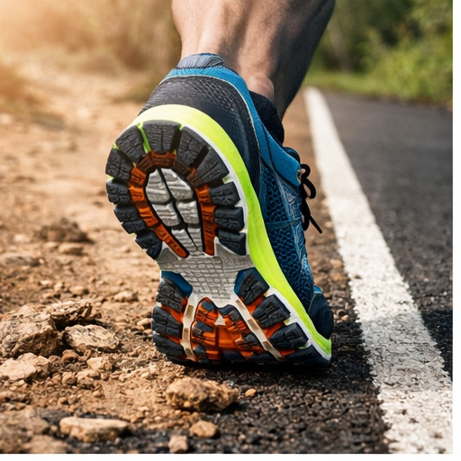
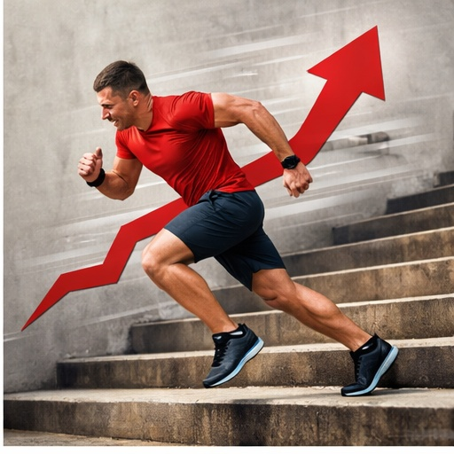
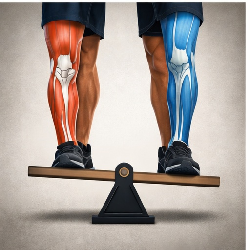
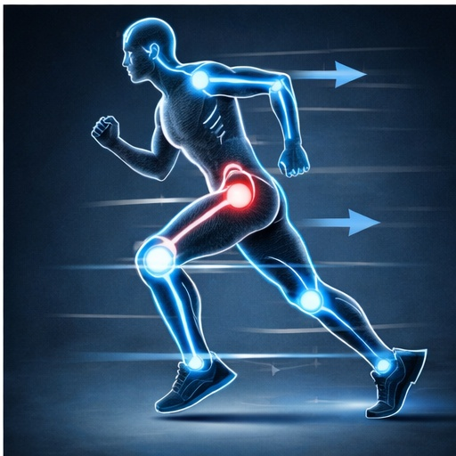

Боль в колене после бега
Когда дискомфорт появляется после пробежек — важно понять причину нагрузки на сустав.
Боль после бега чаще всего связана с постепенной перегрузкой тканей, ошибками техники или недостаточным восстановлением. Если проблему игнорировать, она может перейти в хроническую форму.
Основные причины
Обувь и покрытие
Неподходящие кроссовки или жёсткое покрытие увеличивают нагрузку на сустав.

Изношенная или неподходящая обувь может изменить биомеханику движения.
Резкое увеличение нагрузки
Быстрое увеличение дистанции или темпа не даёт тканям адаптироваться.

Резкое увеличение километража — одна из самых частых причин перегрузки.
Мышечный дисбаланс
Слабость ягодичных и бедренных мышц повышает нагрузку на колено.

Недостаточная стабилизация таза перегружает коленный сустав.
Биомеханика движения
Ошибки техники меняют распределение нагрузки во время бега.

Неправильная постановка стопы увеличивает ударную нагрузку.
Другие ситуации с коленом
Если боль мешает тренироваться — важно разобраться в механизме её появления.
Записаться на консультацию